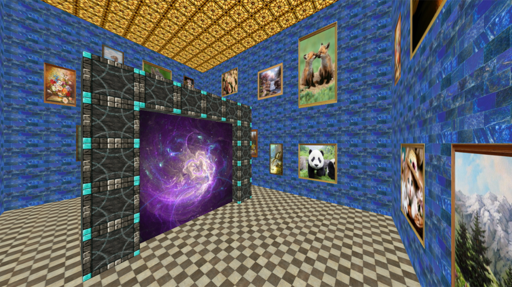
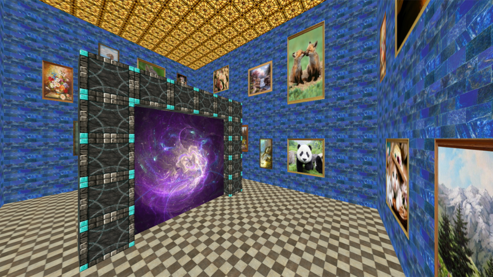
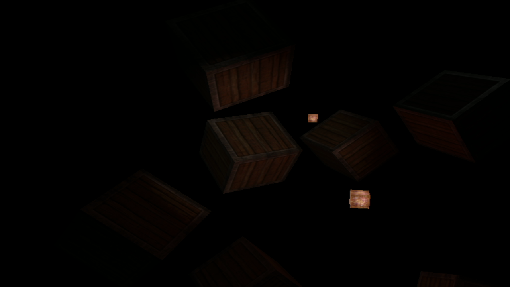
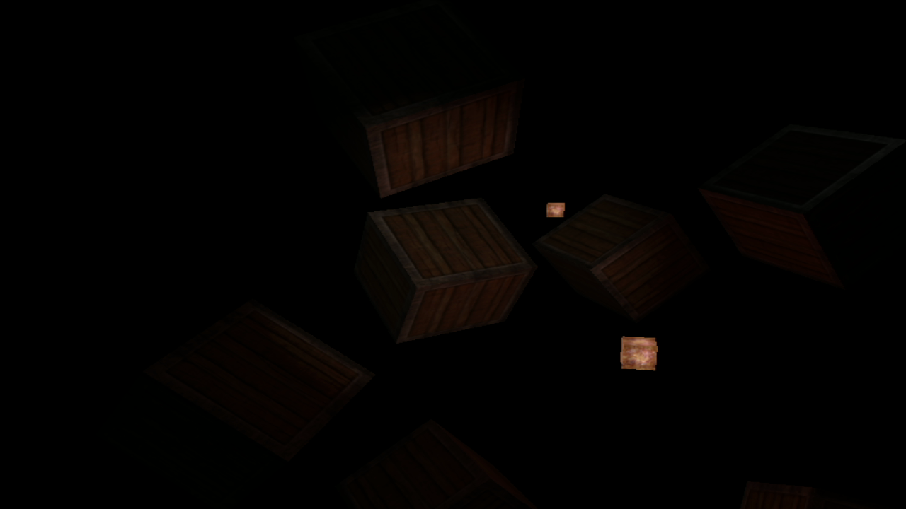

Тестовый текст из диплома для примера.
Приложение предназначено для визуализации в трёхмерном пространстве процедурно генерируемых структур, написано на языке программирования Delphi и основано на обработчиках событий VCL Form и библиотеке OpenGL версии 1.
Разработанное конечное приложение для визуализации генерации трёхмерных пространств имеет 3 основные функции:
- Случайная генерация трёхмерного простого ландшафта с фиксированными размерами и наложением различных текстур в зависимости от высоты;
- Генерация структур на поверхности ландшафта в виде порталов ведущих в структуры комнат, находящиеся прямо под ними;
- Случайное размещение случайных картин с различными размерами и формами на стенах комнат.
В ходе выполнения выпускной квалификационной работы был разработан алгоритм процедурной генерации. На основе разработанных и исследованных алгоритмов спроектирована и реализована виртуальная картинная галерея с возможностью свободного перемещения в пространстве. Движение пользователя осуществляется с помощью стандартных устройств (клавиатура и мышь). Результатом ВКР является законченный программный продукт, представляющий графическое приложение визуализирующее картинную галерею. Картинная галерея представлена в виде группы помещений связанных между собой порталами.


 



 
